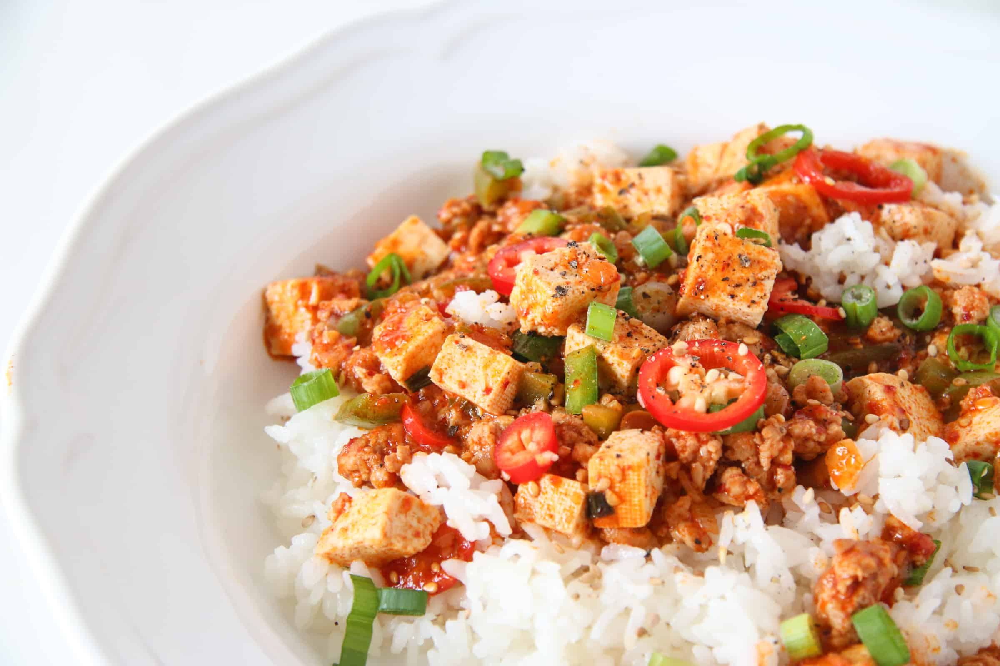

Korean Mapo Tofu

Mapo tofu is a classic chinese comfort food, made with a signature chili bean paste, tofu and ground meat.
Korean soybean stew is a classic korean comfort food, made with tofu, fermented soybean paste, and gochuchang.
This korean spin on mapo tofu had the incredients and structure of mapo tofu, but flavor profile of the classic korena dish Doenjang Jjigae.
Ingredients:
- One pack soft tofu
- 1 lb ground meat
- 2 Tablespoons Gochujang
- 1 Tablespoon Doenjang
- 1 Tablespoon sugar or honey
- 1 Tablespoon soysauce
Steps:
- sautee the meat on medium heat
- add gochujang, doenjang, sugar, and soysauce to the pan, stir-fry until meat is fully cooked
- add cornstarch and 2 cups of water to fully submerge the pan
- cut the tofu into cubes and lay on top of pan
- let simmer for 10 minutes